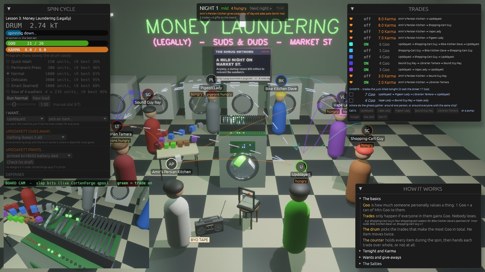
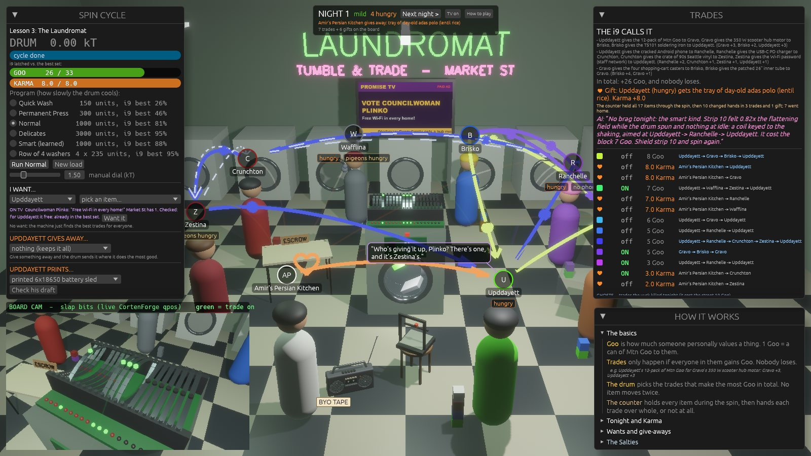

In Upddayett's School of Biddness, the big washer at the back of a Market St laundromat is a physics computer. Every night it works out who should swap what with whom, by shaking a drum of steel strips hot and cooling it slowly until they settle on the answer. Everything in the game is measured, and these pages take its systems to the ideas quants use every day.

Students who like math, physics or code and keep hearing about quant finance. A trading desk runs on a few big ideas: optimization under constraints, randomness you can model, costs that eat thin edges, statistics that don't fool you, and getting paid without getting robbed. You don't need a Bloomberg terminal to learn them. A laundromat full of people who want each other's stuff has all of them.
This won't teach you to trade. It teaches the ideas under the hood, with experiments you can rerun yourself. Every figure on this site comes from the game's real code: the physics is CortenForge, an open-source simulation engine, and the commands to reproduce each one are on its page.
How the washer solves the street's trades: the puzzle, turning it into energy, the strips, the spin, freeze-out, the i9 that watches, and the wash programs, including one that CortenForge's reinforcement learning taught to reheat when it gets stuck. Every figure is a real run.
Each lesson takes one system in the game to the idea it shares with a trading desk, with a figure from real runs, the commands to rerun it, and a few exercises.
A 2-Goo fee raises 9 Goo a night and destroys 19. Why thin edges die to costs, why the weakest member kills a trade, and the fee that raises the most.
In the game: yuck Lesson 2 · StatisticsOne night, 480 real spins: a 12-spin experiment can read 33% or 92%. Paired tests, held-out nights, and the time training harder made it worse.
In the game: the wash programs Lesson 3 · Market plumbingWhy every trade goes through the counter: settlement risk, a German bank that failed mid-afternoon in 1974, and why swap loops stop at four.
In the game: the counterKramers escape: why hop rates fall off a cliff as things cool, and what barrier crossing has to do with default and first-passage times.
In the game: the stripsPicking the best set under constraints: independent sets, QUBOs, and why the biggest trade first gets 37 when 43 was there.
In the game: the boardModel risk and reconciliation: how the idle check finds a field nobody installed, using nothing but force balance.
In the game: the SaltiesThe game is free and open source. It's built in Rust with Bevy for the graphics and CortenForge for the physics. It's developed on Windows 11 with a recent NVIDIA card; other platforms should build but are untested.
git clone https://github.com/YoungMoolahBaby/UpddayettAcademy
cd UpddayettAcademy
cargo run --releaseYou need Rust. The first build compiles everything and takes a few minutes. In the game, pick a wash program, press Run, and watch the board cam. F1 opens the picture book that explains it all.
